No tutorial 1 você pôs um milhão de objetos na tela. Eles ficaram parados. Este tutorial é sobre a pergunta seguinte: o que faz isso andar, e como eu mando nele?
São oito nós, e todos respondem à mesma pergunta de jeitos diferentes: uma onda, um tremor, um campo, um atraso por elemento, uma volta, uma mola, um eco — e um que não mexe em ninguém: ele só entrega o número, para você usar onde quiser.
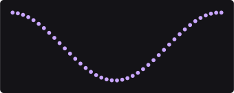
Sine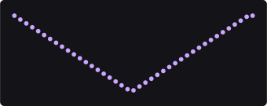
Tri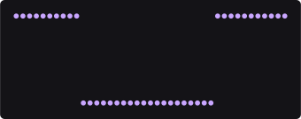
Square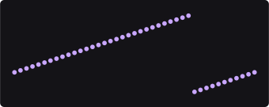
Saw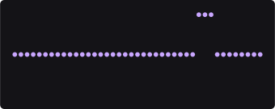
SpikeCole isto inteiro num terminal. Na primeira vez ele compila (alguns minutos); depois abre em segundos.
Abre uma tela escura com uma massa de pontos ondulando. A onda já está lá: o cartão azul do meio, chamado Oscillator, é o assunto da próxima seção.
Se a janela abrir e nada se mexer, você está numa cena errada: confira que copiou
PH2D_GPU_COOK_DEMO=1.
Dois milhões de pontos são bonitos e não deixam ver o que está acontecendo com cada um. Diminua antes de estudar.
Rows do cartão verde Grid, digite
1 e aperte Enter. Faça o mesmo em Columns com
41.
Gap X até a fileira ocupar a largura da tela.Uma onda tem três perguntas, e o cartão tem uma linha para cada: quanto ela move
(Amplitude), quão rápido (Frequency) e quanto um vizinho
espera pelo outro (Stagger).
Stagger é o atraso de fase entre um objeto e o seguinte, contado em
voltas. Em 0 todos sobem e descem juntos — a fileira inteira é um bloco.
Em 1 cada um está uma volta inteira à frente do vizinho, o que dá na mesma
coisa: o bloco volta.
O valor que desenha uma onda ao longo da fileira é 1 dividido pelo número de
vãos: numa fileira de 41 pontos, 1 / 40 = 0.025. É esse número que produziu
as cinco figuras da capa.
Stagger no cartão Oscillator, digite 0.025,
Enter.
Amplitude para a direita e para a esquerda.
Frequency.
0 ela congela — o desenho
fica, o movimento some.Wave — ela mostra uma palavra entre duas
setinhas, e não um número.
Sine, Tri,
Square, Saw, Spike e Custom. São as
cinco figuras da capa. Escolha uma; as setinhas das pontas andam uma opção de cada
vez, sem abrir a lista.Spike: ele é um pico curto — fica em zero 92% do tempo, de propósito.Custom.
Custom Wave: ali a forma é
desenhada por você em vez de escolhida numa lista.Custom Wave só existe com Wave = Custom. Isso não
é um bug: cada linha escondida do app tem um motivo declarado, e a tabela da seção 10 diz, para
cada nó, o que existe e o que acende.O Stagger do Oscillator atrasa a onda. O nó Stagger faz a mesma
ideia virar uma ferramenta própria: ele dá a cada elemento um valor entre um mínimo e um máximo,
seguindo a ordem que você escolher e a curva que você escolher.
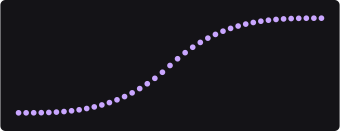
Index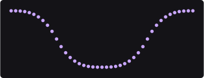
From Center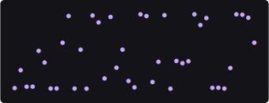
RandomMaximum em 150 e olhe a
fileira.
Ease e percorra as opções da lista.
Quad, Cubic,
Back (que passa do alvo e volta), Bounce (que quica).Order.
Index (a fila normal), From Center
(o meio primeiro) e Random. As três figuras acima são exatamente essas.Random e depois mexa no Seed.
Seed só aparece nesse modo — e trocar o número dá outro
sorteio, sempre o mesmo para o mesmo número.Reverse (a linha que diz On/Off).
From Center ligado ao contrário você
obtém o das pontas para o meio — por isso ele não é uma quarta opção da lista: são
três ordens vezes dois sentidos, seis comportamentos com três entradas.Uma mola não vai direto ao lugar: ela persegue. O problema é que a física dela se
descreve com dois números que ninguém consegue prever — Tension e
Friction. Por isso o nó tem dois modos, e o segundo pergunta em português:
quanto tempo ela demora e quanto ela salta.
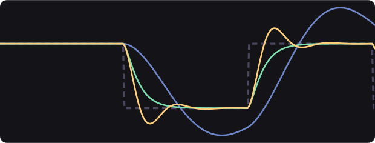
Bounce = 0
Bounce = 0.6
Spring (botão direito no vazio) e ligue-o entre o
Oscillator e o Output.
Wave = Square e Frequency = 0.35.
Mode e escolha Time na lista.
Duration e Bounce.
Tension e Friction somem — elas não são lidas nesse modo.Duration = 0.6 e Bounce = 0.
Bounce para 0.6.
Bounce = 0
o pico é exatamente o alvo; com 0.6 ele é 48% acima. A curva
amarela.Bounce negativo.
Os dois parecem a mesma coisa e não são. O Wiggle dá a cada objeto um tremor próprio: vizinhos não combinam nada. O Noise é um campo espalhado pelo mundo — vizinhos leem quase o mesmo lugar do campo, então andam juntos.
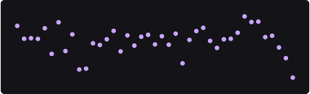
Wiggle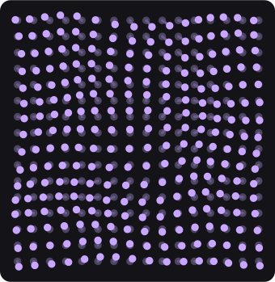
NoiseWiggle e suba Amplitude.
Frequency muda o quão
depressa treme; Octaves acrescenta tremores menores por cima do grande.Rows = 16 e Columns = 16, e troque o
Wiggle por um Noise.
Channel = Position XY e suba
Amplitude devagar.
Scale até perto do mínimo.
Scale pequeno continuar parecendo estática,
baixe Octaves para 1: cada oitava a mais soma um campo com o
dobro da frequência, e a terceira já tem quatro vezes a da primeira.Space no cartão do Noise — ela nasce fechada, com uma
setinha.
Rotation e Uniform: dá para
girar o campo e para esticá-lo num eixo só (desligue o Uniform e um
Scale Y aparece).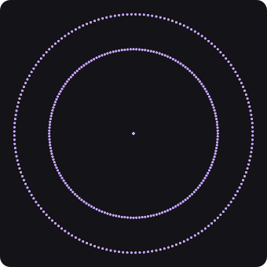
Orbit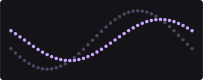
DelayOrbit depois do Grid, com o Grid em 3 × 3.
Speed é em
graus por segundo — o padrão, 72, dá uma volta a cada cinco segundos.Pivot X.
Carry Rotation.
Rows = 1, Columns = 41,
Stagger = 0.025) e ponha um Delay depois do Oscillator.
Ticks.
Mode.
Delay (repete o passado exato), Average
(a média de uma janela) e Blend, que é o padrão e o mais barato — ele só
guarda o resultado anterior, em vez de guardar a fila inteira.O LFO é o único dos oito que não mexe em ninguém. Ele produz só o número, e você decide quem lê. Para ele chegar a alguma coisa é preciso um segundo nó — o Drive, que pega um número e o aplica a um canal.
| o que você quer | o que montar | custa |
|---|---|---|
| mexer num canal | Oscillator (um nó) | 2 passes na placa |
| um número que vários nós leem | LFO → Drive (dois nós) | 3 passes na placa |
A onda é a mesma, e isso foi medido: nos dois caminhos, sobre 10 000 objetos e em seis instantes diferentes, nenhum objeto saiu num lugar diferente — nem por um bit. (A única exceção conhecida é escolher um período que o computador não consegue escrever exatamente, como um terço de segundo: aí 53 dos 10 000 diferem em três centésimos de milésimo de pixel.)
LFO e um Drive.Channel = Y e Mode = Add.
Channel = Size.
Medido nesta máquina com 100 000 objetos, com a cena calma. A coluna por quadro é o que o nó custa enquanto a cena roda; a coluna ao mexer é o que ele custa quando algo muda e ele precisa refazer a conta. Um quadro a 60 por segundo tem 16,67 ms.
| nó | na placa de vídeo? | ao mexer | por quadro |
|---|---|---|---|
| Oscillator | sim | 0,27 ms | 0,26 ms |
| Stagger | sim | 0,78 ms | 0,00 ms |
| Orbit | sim | 0,78 ms | 0,63 ms |
| Spring | sim | 0,89 ms | 1,00 ms |
| LFO + Drive | sim | 1,02 ms | 0,85 ms |
| Delay | não | 1,08 ms | 1,02 ms |
| Wiggle | sim | 1,55 ms | 1,43 ms |
| Noise | sim | 4,47 ms | 4,22 ms |
Esta tabela é gerada do próprio app: se um nó ganhar um controle novo, ela ganha a linha sozinha, com os mesmos números que o cartão mostra — na sua unidade, não na do arquivo. A faixa é até onde o arrasto vai; onde diz digitável até, a caixa que abre no clique aceita mais do que o arrasto alcança. E onde diz só noutro modo, aquele controle existe mas só aparece depois que você troca o modo que a linha nomeia.
Noise depois de um
Oscillator, os dois no canal Y, com o Noise em amplitude baixa.
A onda ganha vida sem deixar de ser onda.20 × 20 → Noise em
Position XY com Scale baixo → Spring em
Position XY, modo Time, Bounce = 0.4. Os objetos
perseguem o campo com peso, e o resultado não parece programado.Stagger (ordem From Center, canal
Size) na frente de um Oscillator: a pulsação sai do meio e se
espalha.LFO ligado a três
Drive diferentes — Y, Size e
Rotation. Três coisas, um relógio.| o que você vê | o que é |
|---|---|
| A fileira sobe e desce em bloco | Stagger em 0 (ou em
1, que dá no mesmo): todos na mesma fase |
| O Noise parece chuvisco de TV | a feição do campo está menor que o vão entre os
objetos: baixe Scale e ponha Octaves = 1 |
| O Spring não para nunca | modo Physics com os valores de fábrica é
bem saltitante; troque para Time e use Bounce = 0 |
Duration e Bounce não existem no cartão | o
Mode está em Physics — eles só aparecem em Time |
| O Delay não faz nada | Ticks em 0 é o ponto neutro: o
nó fica transparente de propósito |
O Seed do Stagger sumiu | ele só existe com
Order = Random |
| Uma linha com uma setinha | é uma seção dobrada: clique para abrir (o
Space do Noise é uma) |
| Um controle que não arrasta | ele está sendo puxado por um fio — o número vem de fora |
| A cena engasga com muitos objetos | o Delay é o único dos oito que
não roda na placa; com ele na cadeia, tudo volta para o processador |